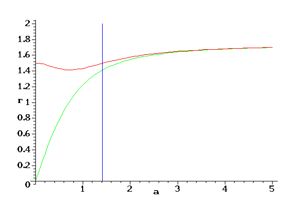
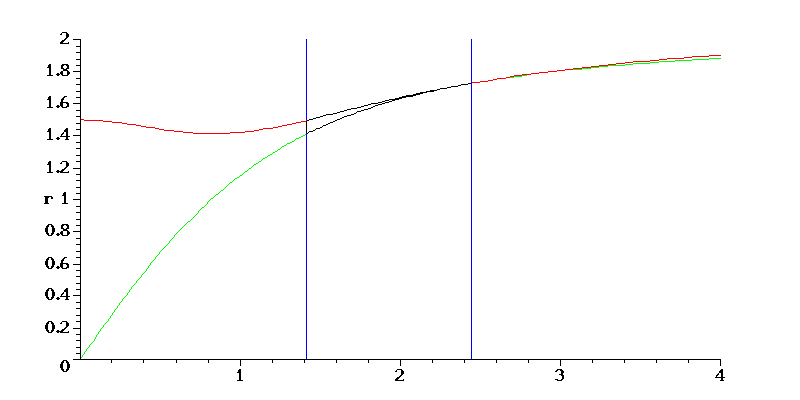
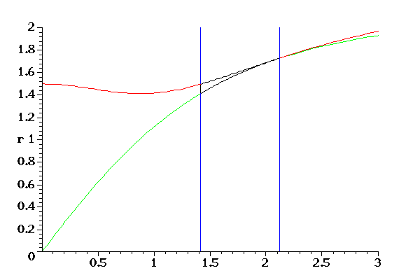
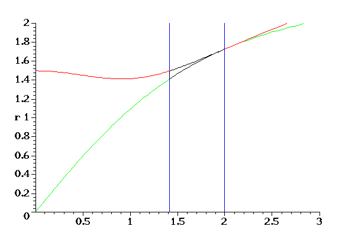
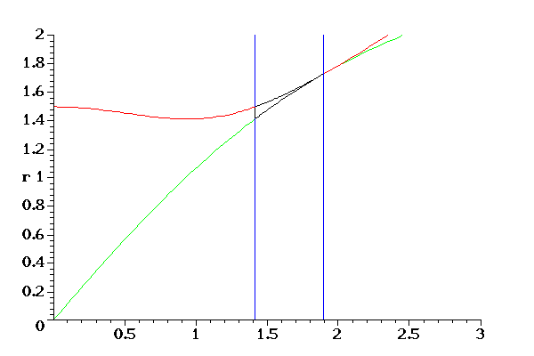
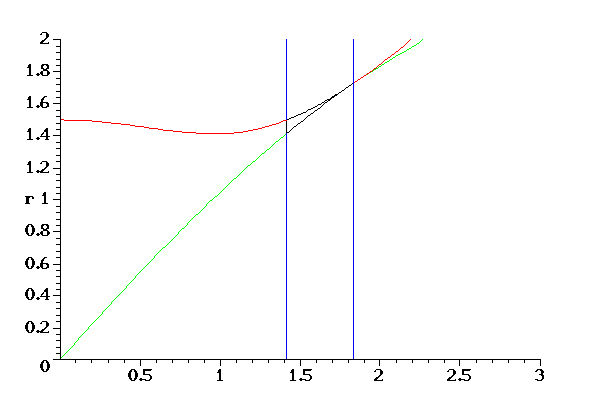
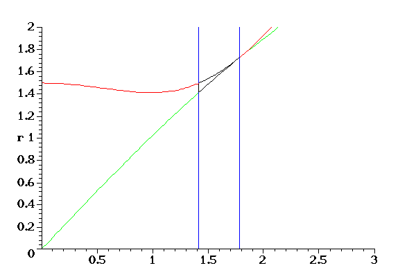
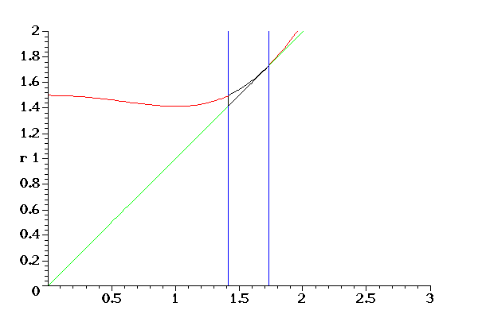

Discriminant Locus for the problem of Section 3
Discriminant Locus when n = 4

Discriminant Locus when n = 5

Discriminant Locus when n = 6

Discriminant Locus when n = 7

Discriminant Locus when n = 9

Discriminant Locus when n = 12

Discriminant Locus when n = 20

Discriminant Locus when n = 1000

Last modified: 17 May 2001 by Frank Sottile